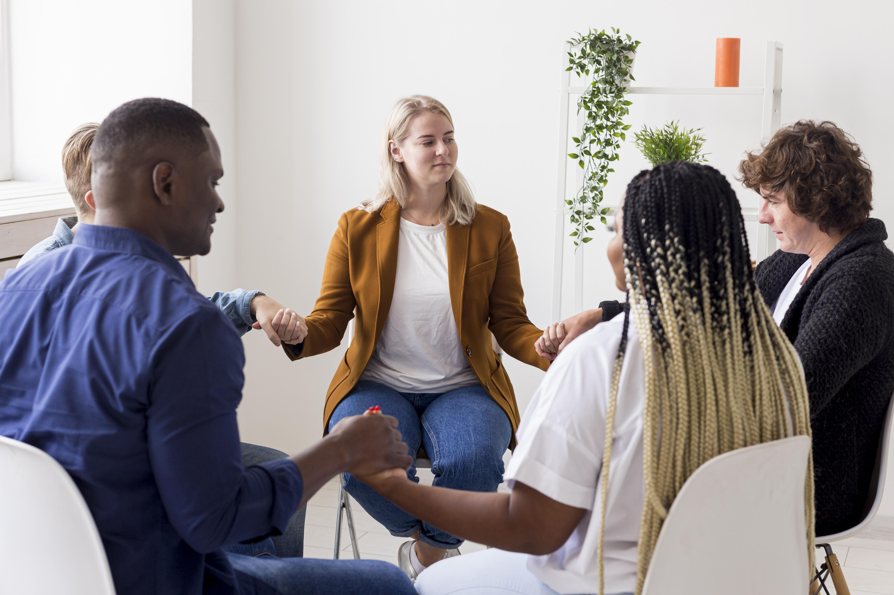

Lived Experience
We bring lived experience expertise into co-production and the decisions that shape mental health support.
We use lived experience, education and research to challenge mental health stigma, support communities and encourage everyone to seek the help they deserve.
Champions for Mental Health is a mental health advocacy organisation. We offer lived experience expertise for co-production, run programmes that reduce mental health stigma, and teach young people to recognise the early signs of a mental health crisis and seek help.
We also take part in mental health research and peer research, including contributions to international academic journals.

We bring lived experience expertise into co-production and the decisions that shape mental health support.
We help young people recognise early signs of mental health crises and understand how to seek help.
We work to reduce stigma and contribute to mental health and peer research.
We provide advocacy, education and research that help people understand mental health, challenge stigma and find support.
View all servicesWe believe that people with lived experience should be heard, respected and involved in shaping better mental health support.
We value the knowledge people gain through their own experiences.
We make mental health conversations clearer, kinder and more informed.
We take part in mental health and peer research with a focus on real voices.
We encourage people to seek help and remind them that they are not alone.
From stigma-reduction initiatives to youth training, our programmes are designed to turn understanding into action.
We want people to understand mental health, recognise when support may be needed and feel confident enough to ask for help.
Meet the people helping guide our advocacy, programmes and research.
Meet our people
Voices for change
Evidence and experience
Working together
Read about our work, mental health education and the research shaping our understanding.
Helpful information and updates from our work.
Read more →News from our programmes and community activities.
Read more →Explore our research and peer research contributions.
Read more →Have a question, want to collaborate or learn more about our work? Get in touch with our team.
For programme enquiries, partnerships, volunteering and general questions.
Visit our contact page →Be part of a community working towards a more understanding and supportive world.